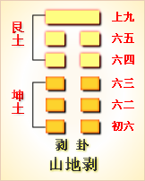

第二十三卦初六爻详解 第二十三卦六二爻详解 第二十三卦六三爻详解
第二十三卦六四爻详解 第二十三卦六五爻详解 第二十三卦上九爻详解
周易第二十三卦 剥 山地剥 艮上坤下
剥：不利有攸往。
彖曰：剥，剥也，柔变刚也。不利有攸往，小人长也。顺而止之，观象也。君子尚消息盈虚，天行也。
象曰：山附地上，剥;上以厚下，安宅。
初六：剥(爿木)以足，蔑贞凶。象曰：剥(爿木)以足，以灭下也。
六二：剥(爿木)以辨，蔑贞凶。象曰：剥(爿木)以辨，未有与也。
六三：剥之，无咎。象曰：剥之无咎，失上下也。
六四：剥(爿木)以肤，凶。象曰：剥(爿木)以肤，切近灾也。
六五：贯鱼，以宫人宠，无不利。象曰：以宫人宠，终无尤也。
上九：硕果不食，君子得舆，小人剥庐。象曰：君子得舆，民所载也。小人剥庐，终不可用也。
剥卦卦象，山地剥卦的象征意义
剥卦，是异卦相叠，坤卦在下，艮卦在上。坤为地，在山之下;艮为山，在地之上。山在地上，常年受到风吹雨打，雷击日晒，被剥蚀不止。
从整个卦象上看，五阴在下，一阳在上，阴盛而阳孤;高山附于地。高山被风雨侵蚀而剥落，其原来的美色遭到破坏，剥落物落在地上，把大地上的原物压坏，破坏了大地原有的美色，对大地也是一种破坏。所以剥卦具有破坏性。此卦阴盛阳衰，喻小人得势，君子困顿，事业败坏。当然，易经是充满辩证思想和发展变化的哲理，若是剥落物落到地上，地上正是一个坑，剥落物将其填平;或者地上是贫瘠的土地，剥落之物土壤肥沃，这又是好事了。
剥卦位于贲卦之后，《序卦》之中这样说道：“致饰，然后享则尽矣，故受之以剥。剥者，剥也。”经过贲卦的文饰，通达到了尽头，接着就是剥蚀了。
《象》曰：山附于地，剥;上以厚下安宅。
《象》中指出：剥卦的卦象是坤(地)下艮(山)上，好比高山受侵蚀而风化，逐渐接近于地面之表象，因而象征剥落;位居在上的人看到这一现象，应当加强基础，使它更加厚实，只有这样才能巩固其住所而不至发生危险。
剥卦为坤卦和艮卦组成，坤卦为柔在下，山为止在前。这又喻示着，从平坦的大地顺利前进时，突然遇到了高山，是应该前进还是止步不前，个人选择不同，结果也不相同。剥卦告诉人们的道理就是顺势而止。
剥卦是承接上一象征盛大无比的贲卦而来的一卦。此卦谈的是事物有盛必有衰落的道理。从初爻到第四爻基本上都是这个意思。其第五爻谈的是对衰落采取的一些补救办法，其最后一爻谈的是采取的一些补救办法之后所取得的效果。
剥卦属于中下卦。《象》中这样评断此卦：鹊遇天晚宿林中，不知林内先有鹰，虽然同处心生恶，卦若逢之是非轻。
此卦卦名为剥。《说文》中说：“剥，裂也。”《广雅》中说：“剥，离也。”可见“剥”字的本义是指去掉物体表面上的东西，也就是剥离、剥脱、剥落的意思。装饰的东西不会长久，最终都要脱落，就像我们搞家装一样，过几年，墙表面就得剥落，还得重新装修。所以贲卦的下面，便是剥卦。《序卦传》中说：“致饰，然后亨则尽矣，故受之以剥。”《杂卦传》中说：“剥，烂也。”可见《序卦传》与《杂卦传》是社会变化而言的。盛世之时，人们讲究装饰，过度的奢侈，就像腐烂物一样，会逐渐剥蚀盛世的繁荣，使盛世走向衰落。
剥卦的卦画是下面五个阴爻，上面一个阳爻。
剥卦卦象，从卦象上分析，五个阴爻代表阴气的强盛，强胜的阴气将剥蚀掉上面的弱阳，这便是剥卦表示的意思。剥卦是十二消息卦之一，代表的节气为霜降。剥卦六爻代表寒露至立冬的三十余天。五天为一候，一爻代表一候。此时万物的生命活力大减，草木凋零，落叶纷飞。天地间的生气被剥夺。另外，从上下卦的卦象分析，剥卦上卦为艮为山，下卦为坤为土，山附于地便是剥卦的卦象。其实这表现的是一个大形象，即地剥山的形象。它的性质与前面的蛊卦有些相似。大山逐渐沙粒化，最后变为土地，所以是地剥去了大山。
关键词：周易,剥卦,山地剥,艮上坤下
剥卦：不利于外出。
初六：床足脱落了。不必占问，凶险。
六二：床权脱落了。不必占问，凶险。
六三：床离散了，没有灾祸。
六五：宫人射中了鱼，得到参加祭祀的荣宠。没有什么不利。
上九：劳动果实自己不能享受，君子却出门有车坐，百姓要离开自己的草屋。
六四：床上的席子没有了，凶险。
①剥是本卦标题。剥的意思是击打、分离、掉落。全卦的内容同政治有关.“剥”是卦中多见词，所以用作标题。
②剥：脱落。
③蔑：无 不用。
④辨：用作“牑”，意思是床板。
⑤之：代词，指床。
(6) 肤：这里指床上的席子。
(7)贯鱼：射中了鱼。
(8)剥：离开。庐： 草 房子。